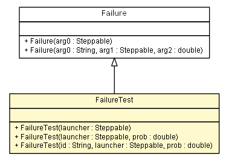

es.upm.dit.gsi.shanks.model.failure.util.test
Class FailureTest

java.lang.Object
 es.upm.dit.gsi.shanks.model.event.Event
es.upm.dit.gsi.shanks.model.event.ProbabilisticEvent
es.upm.dit.gsi.shanks.model.event.networkelement.ProbabilisticNetworkElementEvent
es.upm.dit.gsi.shanks.model.event.failiure.Failure
es.upm.dit.gsi.shanks.model.failure.util.test.FailureTest
es.upm.dit.gsi.shanks.model.event.Event
es.upm.dit.gsi.shanks.model.event.ProbabilisticEvent
es.upm.dit.gsi.shanks.model.event.networkelement.ProbabilisticNetworkElementEvent
es.upm.dit.gsi.shanks.model.event.failiure.Failure
es.upm.dit.gsi.shanks.model.failure.util.test.FailureTest
public class FailureTest
- extends Failure
- Author:
- a.carrera
| Methods inherited from class es.upm.dit.gsi.shanks.model.event.networkelement.ProbabilisticNetworkElementEvent |
addAffectedElement, addAffectedElements, addAffectedScenario, addAffectedScenarios, addPossibleAffectedElement, addPossibleAffectedElementField, addPossibleAffectedElementProperty, addPossibleAffectedElementState, addPossibleAffectedScenario, addPossibleAffectedScenarioField, addPossibleAffectedScenarioState, changeProperties, changeStatus, getAffected, getCurrentAffectedElements, getPossibleAffectedElements, getPossibleAffectedScenarios, removeAffectedElement, removeAffectedScenario, removePossibleAffectedElements, removePossibleAffectedScenarios |
| Methods inherited from class java.lang.Object |
clone, equals, finalize, getClass, hashCode, notify, notifyAll, toString, wait, wait, wait |
FailureTest
public FailureTest(sim.engine.Steppable launcher)
FailureTest
public FailureTest(sim.engine.Steppable launcher,
double prob)
FailureTest
public FailureTest(String id,
sim.engine.Steppable launcher,
double prob)
isResolved
public boolean isResolved()
- Specified by:
isResolved in class Failure
changeOtherFields
public void changeOtherFields()
throws UnsupportedNetworkElementFieldException
- Specified by:
changeOtherFields in class ProbabilisticNetworkElementEvent
- Throws:
UnsupportedNetworkElementFieldException
addPossibleAffected
public void addPossibleAffected()
- Specified by:
addPossibleAffected in class Event
interactWithNE
public void interactWithNE()
- Specified by:
interactWithNE in class Event
Copyright © 2011-2013 Grupo de Sistemas Inteligentes - Universidad Politécnica de Madrid. All Rights Reserved.